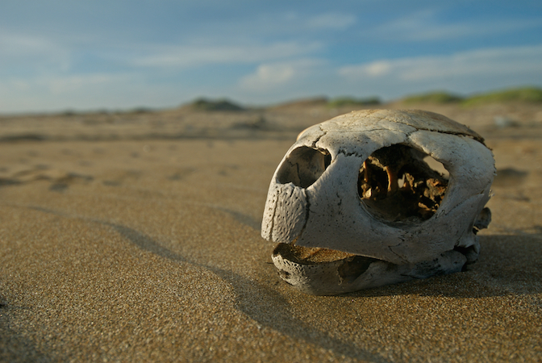
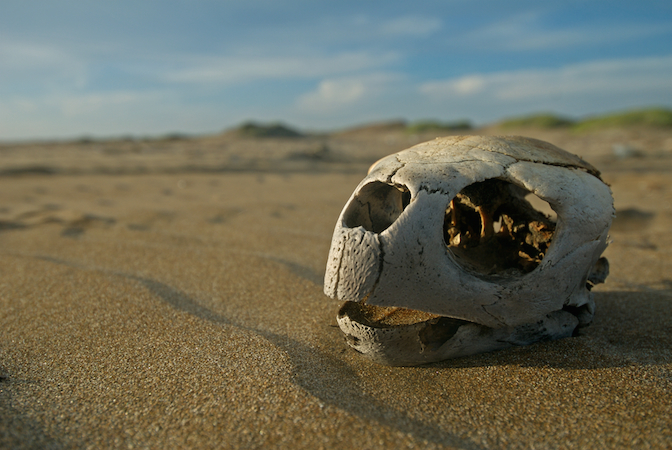

Main threats
Six of the seven species of sea turtles are considered threatened or endangered across the globe as a result of
human behavior and way of life.
There are many ways that people harm these animals,
from people catching them with fishing gear to people eating their meat and eggs.
Sea turtles must overcome numerous risks to their survival in the wild.
Raccoons, crabs, and ants are a few predators that prey on eggs and hatchlings that are still in the nest.
Hatchlings make bite-sized meals for birds, crabs, and a variety of saltwater predators as they emerge.
Except for the occasional shark assault, sea turtles are largely protected from predators once they reach adulthood.
However, the decline in sea turtle numbers toward extinction is not due to these natural pressures.
When solid trash, chemicals, and other pollutants from human activity enter the ocean, they harm sea turtles
and can even kill them. The sources of contamination include everything from fertilizer runoff from farms to
fishing nets lost by fisherman to wastewater discharge from cruise liners. This implies that anybody, anywhere
in the European Union, has the potential to affect the wellbeing of the oceans and sea turtles.
Egg and meat consumption
Even though both turtle eggs and their meat, which is mostly from green turtles, are outlawed in most nations, they are nonetheless believed to have aphrodisiac properties in many cultures.
Coastal development
Building on mangroves, beaches, and other crucial coastal regions might hinder turtles' capacity to nest and feed, as well as their ability to produce hatchlings.
Plastic and other marine debris
Microplastic can harm nests and hatchlings, and turtles must wade through it while swimming and on beaches. Turtles also eat plastic and get stuck in it.
Global warming
Rising temperatures raise the temperature of the sand, which only allows for the birth of females. Sea level rise, which can erode nesting beaches and result in coral bleaching, another effect of climate change, also affects hawksbills' critical habitat.
 
